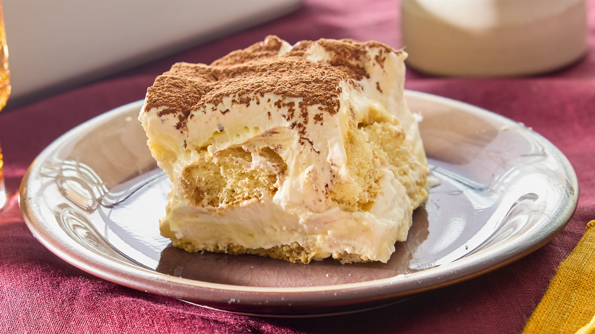

An Easy Recipe For Tiramisu
Below you will find a quick and easy recipe for Tiramisu
Ingredients
- 1 1/2 cups espresso or strong coffee, room temperature
- 6 Tbsp golden rum, divided
- 40 ladyfinger cookies
- 6 large egg yolks
- 3/4 cup sugar
- 16 oz mascarpone, cold
- 2 cups heavy whipping cream
- 2-3 Tbsp unsweetened cocoa powder
Directions
- Prepare coffee and let cool down.
- Add egg yolks and sugar to bowl and using an electric mixer, mix for 4-5 minutes. Then add marscapone and mix gently until fully combined.
- In a separate bowl add heavy whipping cream and mix with an electric mixer until you get stiff peaks in your whipped cream.
- Combine your marscapone mixture with your whipped cream.
- Now to begin assembling your tiramisu. Start by dipping your ladyfinger cookies in coffee and create a layer at the bottom of your serving dish.
- Add a layer of half of your marscapone cream. Alternate creating layers of coffee-dipped ladyfingers and the second half of your marscapone cream
- Dust your tiramisu with cocoa powder and let rest in your fridge for 4-5 hours.
- Enjoy!
Below is a link to a helpful youtube video and a link to a similar recipe
Easy Tiramisu Cake
Tiramisu Easy Recipe
